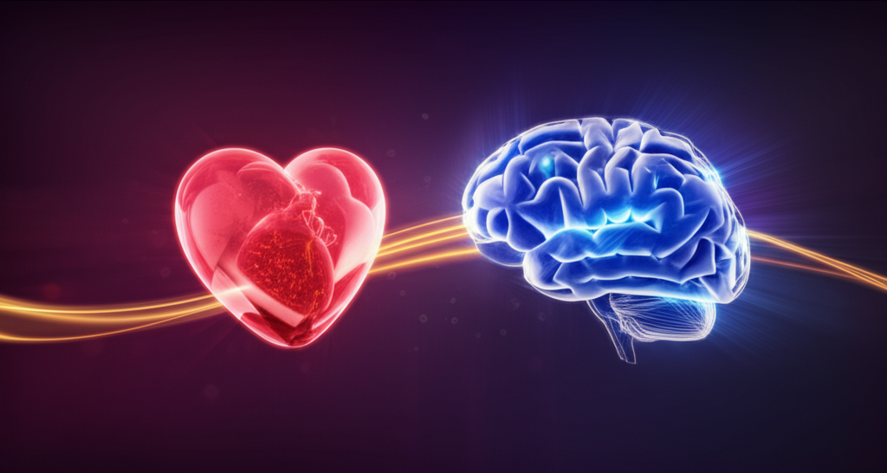
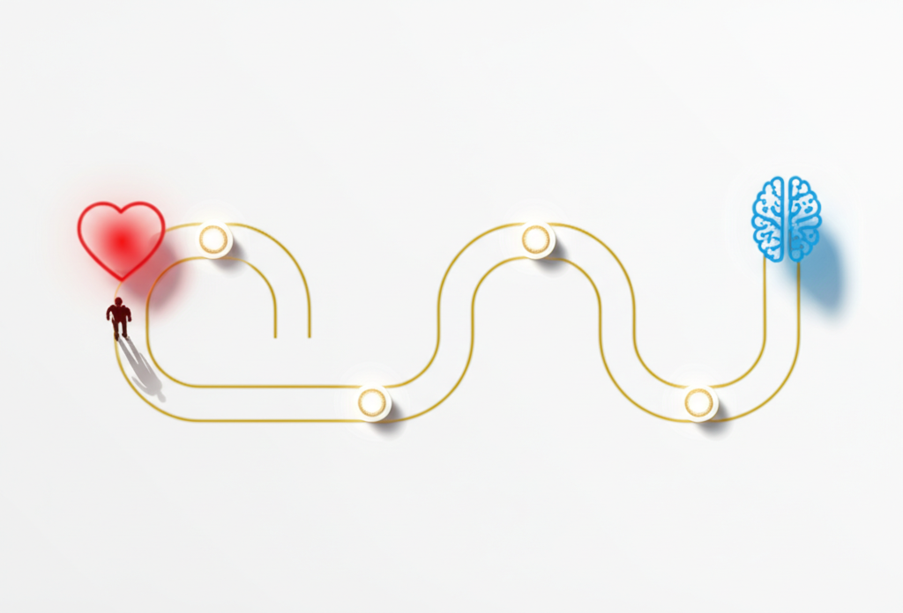
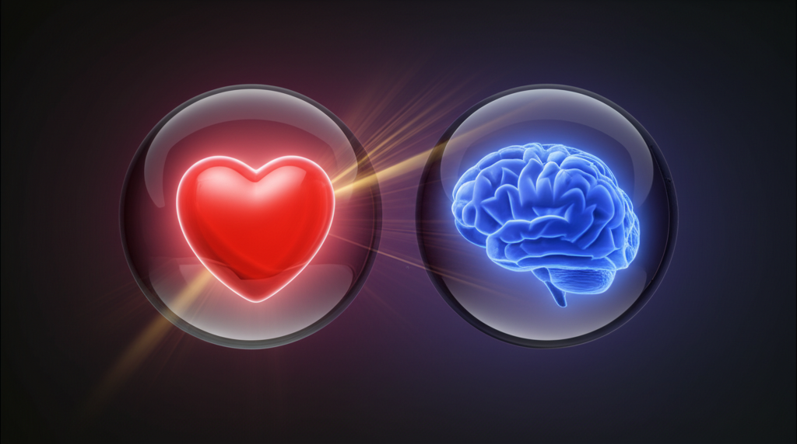

<!DOCTYPE html>
<html lang="en">
<head>
  <meta charset="UTF-8">
  <meta name="viewport" content="width=device-width, initial-scale=1.0">
  <title>Emotion Decides, Logic Justifies</title>
  <script src="https://cdn.tailwindcss.com"></script>
  <script src="https://unpkg.com/react@18/umd/react.production.min.js"></script>
  <script src="https://unpkg.com/react-dom@18/umd/react-dom.production.min.js"></script>
  <script src="https://unpkg.com/@babel/standalone/babel.min.js"></script>
  <script src="https://unpkg.com/framer-motion@10.16.4/dist/framer-motion.js"></script>
  <link href="https://fonts.googleapis.com/css2?family=Inter:wght@300;400;500;600;700;800&display=swap" rel="stylesheet">
  <script>
    tailwind.config = {
      theme: {
        extend: {
          colors: {
            accent: {
              DEFAULT: '#7c3aed',
              50: '#f5f3ff',
              100: '#ede9fe',
              200: '#ddd6fe',
              300: '#c4b5fd',
              400: '#a78bfa',
              500: '#8b5cf6',
              600: '#7c3aed',
              700: '#6d28d9',
              800: '#5b21b6',
              900: '#4c1d95',
            }
          },
          fontSize: {
            'xs': ['0.75rem', { lineHeight: '1.5' }],
            'sm': ['0.875rem', { lineHeight: '1.5' }],
            'base': ['1rem', { lineHeight: '1.7' }],
            'lg': ['1.125rem', { lineHeight: '1.6' }],
            'xl': ['1.25rem', { lineHeight: '1.5' }],
            '2xl': ['1.5rem', { lineHeight: '1.4' }],
            '3xl': ['1.875rem', { lineHeight: '1.3' }],
            '4xl': ['2.25rem', { lineHeight: '1.2' }],
          }
        }
      }
    }
  </script>
  <style>
    * { font-family: 'Inter', -apple-system, BlinkMacSystemFont, sans-serif; }
    body { background: #FFFFFF; color: #1a1a1a; }
    ::selection { background: #7c3aed; color: #fff; }
    h1, h2, h3, h4 { letter-spacing: -0.025em; }
    .lesson-container { max-width: 800px; margin: 0 auto; }
    .gradient-accent { background: linear-gradient(135deg, #7c3aed 0%, #6d28d9 50%, #4c1d95 100%); }
    .glow-accent { box-shadow: 0 0 60px rgba(124,58,237,0.3); }
  </style>
</head>
<body>
  <div id="root"></div>

  <script type="text/babel">
    const { motion, useInView, AnimatePresence } = window.Motion;
    const { useState, useRef, useEffect } = React;

    const smoothEase = [0.25, 0.4, 0.25, 1];

    // Clean SVG Icons
    const Icons = {
      Heart: () => (
        <svg width="20" height="20" viewBox="0 0 24 24" fill="none" stroke="currentColor" strokeWidth="2" strokeLinecap="round" strokeLinejoin="round">
          <path d="M19 14c1.49-1.46 3-3.21 3-5.5A5.5 5.5 0 0 0 16.5 3c-1.76 0-3 .5-4.5 2-1.5-1.5-2.74-2-4.5-2A5.5 5.5 0 0 0 2 8.5c0 2.3 1.5 4.05 3 5.5l7 7Z"/>
        </svg>
      ),
      Brain: () => (
        <svg width="20" height="20" viewBox="0 0 24 24" fill="none" stroke="currentColor" strokeWidth="2" strokeLinecap="round" strokeLinejoin="round">
          <path d="M12 5a3 3 0 1 0-5.997.125 4 4 0 0 0-2.526 5.77 4 4 0 0 0 .556 6.588A4 4 0 1 0 12 18Z"/>
          <path d="M12 5a3 3 0 1 1 5.997.125 4 4 0 0 1 2.526 5.77 4 4 0 0 1-.556 6.588A4 4 0 1 1 12 18Z"/>
          <path d="M12 5v13"/>
        </svg>
      ),
      Zap: () => (
        <svg width="20" height="20" viewBox="0 0 24 24" fill="none" stroke="currentColor" strokeWidth="2" strokeLinecap="round" strokeLinejoin="round">
          <polygon points="13 2 3 14 12 14 11 22 21 10 12 10 13 2"/>
        </svg>
      ),
      Target: () => (
        <svg width="20" height="20" viewBox="0 0 24 24" fill="none" stroke="currentColor" strokeWidth="2" strokeLinecap="round" strokeLinejoin="round">
          <circle cx="12" cy="12" r="10"/><circle cx="12" cy="12" r="6"/><circle cx="12" cy="12" r="2"/>
        </svg>
      ),
      Check: () => (
        <svg width="20" height="20" viewBox="0 0 24 24" fill="none" stroke="currentColor" strokeWidth="2" strokeLinecap="round" strokeLinejoin="round">
          <polyline points="20 6 9 17 4 12"/>
        </svg>
      ),
      ArrowRight: () => (
        <svg width="18" height="18" viewBox="0 0 24 24" fill="none" stroke="currentColor" strokeWidth="2" strokeLinecap="round" strokeLinejoin="round">
          <line x1="5" y1="12" x2="19" y2="12"/><polyline points="12 5 19 12 12 19"/>
        </svg>
      ),
      Microscope: () => (
        <svg width="20" height="20" viewBox="0 0 24 24" fill="none" stroke="currentColor" strokeWidth="2" strokeLinecap="round" strokeLinejoin="round">
          <path d="M6 18h8"/><path d="M3 22h18"/><path d="M14 22a7 7 0 1 0 0-14h-1"/><path d="M9 14h2"/><path d="M9 12a2 2 0 0 1-2-2V6h6v4a2 2 0 0 1-2 2Z"/><path d="M12 6V3a1 1 0 0 0-1-1H9a1 1 0 0 0-1 1v3"/>
        </svg>
      ),
      Sparkles: () => (
        <svg width="20" height="20" viewBox="0 0 24 24" fill="none" stroke="currentColor" strokeWidth="2" strokeLinecap="round" strokeLinejoin="round">
          <path d="m12 3-1.912 5.813a2 2 0 0 1-1.275 1.275L3 12l5.813 1.912a2 2 0 0 1 1.275 1.275L12 21l1.912-5.813a2 2 0 0 1 1.275-1.275L21 12l-5.813-1.912a2 2 0 0 1-1.275-1.275L12 3Z"/>
        </svg>
      ),
    };

    // Animation Components
    function FadeUp({ children, delay = 0, className = "" }) {
      const ref = useRef(null);
      const isInView = useInView(ref, { once: true, margin: "-80px" });
      return (
        <motion.div
          ref={ref}
          className={className}
          initial={{ opacity: 0, y: 40 }}
          animate={isInView ? { opacity: 1, y: 0 } : {}}
          transition={{ duration: 0.7, delay, ease: smoothEase }}
        >
          {children}
        </motion.div>
      );
    }

    function ScaleIn({ children, delay = 0, className = "" }) {
      const ref = useRef(null);
      const isInView = useInView(ref, { once: true, margin: "-50px" });
      return (
        <motion.div
          ref={ref}
          className={className}
          initial={{ opacity: 0, scale: 0.95 }}
          animate={isInView ? { opacity: 1, scale: 1 } : {}}
          transition={{ duration: 0.6, delay, ease: smoothEase }}
        >
          {children}
        </motion.div>
      );
    }

    function Counter({ end, suffix = "", prefix = "" }) {
      const [count, setCount] = useState(0);
      const ref = useRef(null);
      const isInView = useInView(ref, { once: true });

      useEffect(() => {
        if (isInView) {
          let start = 0;
          const duration = 2000;
          const increment = end / (duration / 16);
          const timer = setInterval(() => {
            start += increment;
            if (start >= end) {
              setCount(end);
              clearInterval(timer);
            } else {
              setCount(Math.floor(start));
            }
          }, 16);
          return () => clearInterval(timer);
        }
      }, [isInView, end]);

      return <span ref={ref}>{prefix}{count}{suffix}</span>;
    }

    // Interactive Decision Journey - Elite Version
    function DecisionJourney() {
      const [step, setStep] = useState(0);
      const ref = useRef(null);
      const isInView = useInView(ref, { once: true });

      const steps = [
        { icon: Icons.Heart, label: 'Emotional Trigger', desc: '"I want that..." - The feeling comes first, instantaneous and unconscious.', color: 'bg-red-500' },
        { icon: Icons.Sparkles, label: 'Desire Builds', desc: '"This could change everything..." - Emotion amplifies, painting vivid futures.', color: 'bg-pink-500' },
        { icon: Icons.Brain, label: 'Logic Activates', desc: '"But is it worth it?" - The rational mind finally wakes up, seeking justification.', color: 'bg-blue-500' },
        { icon: Icons.Check, label: 'Rationalization', desc: '"It\'s actually a smart investment." - Logic provides the excuse emotion needs.', color: 'bg-green-500' },
      ];

      useEffect(() => {
        if (isInView) {
          const interval = setInterval(() => setStep(s => (s + 1) % 4), 2500);
          return () => clearInterval(interval);
        }
      }, [isInView]);

      return (
        <div ref={ref} className="py-6">
          {/* Progress bar */}
          <div className="relative mb-8">
            <div className="h-1 bg-neutral-200 rounded-full">
              <motion.div
                className="h-full bg-gradient-to-r from-red-500 via-pink-500 to-accent-600 rounded-full"
                animate={{ width: `${((step + 1) / 4) * 100}%` }}
                transition={{ duration: 0.5, ease: smoothEase }}
              />
            </div>
          </div>

          {/* Steps */}
          <div className="grid grid-cols-4 gap-2 mb-6">
            {steps.map((s, i) => {
              const Icon = s.icon;
              return (
                <motion.div
                  key={i}
                  className={`flex flex-col items-center cursor-pointer`}
                  onClick={() => setStep(i)}
                  animate={{ opacity: step >= i ? 1 : 0.4 }}
                >
                  <motion.div
                    className={`w-12 h-12 rounded-xl flex items-center justify-center mb-2 ${step === i ? s.color + ' text-white' : 'bg-neutral-100 text-neutral-400'}`}
                    animate={{ scale: step === i ? 1.1 : 1 }}
                    transition={{ duration: 0.3 }}
                  >
                    <Icon />
                  </motion.div>
                  <div className={`text-xs text-center font-medium ${step >= i ? 'text-neutral-900' : 'text-neutral-400'}`}>
                    {s.label}
                  </div>
                </motion.div>
              );
            })}
          </div>

          {/* Current step description */}
          <AnimatePresence mode="wait">
            <motion.div
              key={step}
              initial={{ opacity: 0, y: 10 }}
              animate={{ opacity: 1, y: 0 }}
              exit={{ opacity: 0, y: -10 }}
              className="p-5 bg-accent-50 rounded-2xl border border-accent-200"
            >
              <p className="text-sm text-neutral-700 text-center">{steps[step].desc}</p>
            </motion.div>
          </AnimatePresence>
        </div>
      );
    }

    // Main Lesson Component
    function Lesson() {
      return (
        <div className="bg-white min-h-screen">
          {/* Hero Section */}
          <header className="bg-neutral-950 text-white relative overflow-hidden">
            <div className="absolute top-0 right-0 w-96 h-96 bg-gradient-to-bl from-accent-600/15 to-transparent rounded-full blur-3xl" />
            <div className="absolute bottom-0 left-0 w-64 h-64 bg-gradient-to-tr from-accent-900/20 to-transparent rounded-full blur-2xl" />

            <div className="lesson-container px-6 py-20 relative z-10">
              <FadeUp>
                <div className="flex items-center gap-2 mb-6">
                  <span className="px-3 py-1 bg-accent-600/20 text-accent-400 text-xs font-semibold rounded-full tracking-wide uppercase">
                    Psychology of Persuasion
                  </span>
                </div>
              </FadeUp>

              <FadeUp delay={0.1}>
                <h1 className="text-4xl font-extrabold mb-4 leading-tight">
                  Emotion Decides, Logic Justifies
                </h1>
              </FadeUp>

              <FadeUp delay={0.2}>
                <p className="text-xl text-neutral-300 mb-8 max-w-2xl leading-relaxed">
                  The hidden truth about every buying decision: your heart says yes before your brain even wakes up. Master this order and you master persuasion.
                </p>
              </FadeUp>

              <FadeUp delay={0.3}>
                <div className="flex flex-wrap gap-6 text-sm text-neutral-400">
                  <div className="flex items-center gap-2">
                    <Icons.Heart />
                    <span>95% emotional decisions</span>
                  </div>
                  <div className="flex items-center gap-2">
                    <Icons.Brain />
                    <span>Logic follows, never leads</span>
                  </div>
                </div>
              </FadeUp>
            </div>
          </header>

          {/* Main Content */}
          <main className="px-6 py-12">
            <div className="lesson-container space-y-16">

              {/* Opening Hook */}
              <FadeUp>
                <section>
                  <p className="text-lg text-neutral-700 leading-relaxed">
                    In 1994, neuroscientist <strong>Antonio Damasio</strong> made a discovery that would forever change how we understand decision-making. He studied patients with damage to the ventromedial prefrontal cortex - the brain's emotional processing center.
                  </p>
                  <p className="text-lg text-neutral-700 leading-relaxed mt-4">
                    These patients had perfect logic. Perfect memory. Perfect IQ scores. But they couldn't make decisions. <strong>Not complex decisions. ANY decisions.</strong> They would spend hours debating which restaurant to choose, unable to settle on lunch.
                  </p>
                </section>
              </FadeUp>

              {/* Hero Image - 16:9 */}
              <ScaleIn>
                <div className="rounded-2xl overflow-hidden bg-neutral-900 max-w-2xl mx-auto shadow-xl">
                  
                </div>
              </ScaleIn>

              {/* The Science - Black with gradient */}
              <FadeUp>
                <section className="bg-neutral-950 rounded-3xl p-8 md:p-10 overflow-hidden relative">
                  <div className="absolute top-0 right-0 w-64 h-64 bg-gradient-to-bl from-accent-600/20 to-transparent rounded-full blur-3xl" />

                  <div className="relative z-10">
                    <div className="flex items-center gap-3 mb-6">
                      <div className="w-10 h-10 rounded-xl bg-gradient-to-br from-accent-500 to-accent-700 flex items-center justify-center text-white">
                        <Icons.Microscope />
                      </div>
                      <h2 className="text-2xl font-bold text-white">The Somatic Marker Hypothesis</h2>
                    </div>

                    <p className="text-neutral-300 leading-relaxed mb-6">
                      Damasio's research proved that <strong className="text-white">emotion isn't the enemy of reason - it's the prerequisite</strong>. Without emotional input, the logical mind has no basis for choice. It can analyze options forever but never feel which one is "right."
                    </p>

                    <p className="text-neutral-300 leading-relaxed mb-8">
                      Your emotions create what Damasio called "somatic markers" - gut feelings that flag options as good or bad before conscious analysis begins. <strong className="text-accent-400">By the time you "think" about a purchase, your body has already voted.</strong>
                    </p>

                    <div className="grid md:grid-cols-3 gap-4">
                      <div className="bg-white/5 backdrop-blur rounded-xl p-5 border border-white/10">
                        <div className="text-3xl font-bold text-red-400 mb-1"><Counter end={95} suffix="%" /></div>
                        <div className="text-sm text-neutral-400">Decisions are emotional</div>
                      </div>
                      <div className="bg-white/5 backdrop-blur rounded-xl p-5 border border-white/10">
                        <div className="text-3xl font-bold text-blue-400 mb-1"><Counter end={5} suffix="%" /></div>
                        <div className="text-sm text-neutral-400">Purely logical choices</div>
                      </div>
                      <div className="bg-white/5 backdrop-blur rounded-xl p-5 border border-white/10">
                        <div className="text-3xl font-bold text-accent-400 mb-1"><Counter end={250} suffix="ms" /></div>
                        <div className="text-sm text-neutral-400">Emotional response time</div>
                      </div>
                    </div>
                  </div>
                </section>
              </FadeUp>

              {/* Interactive Decision Journey */}
              <FadeUp>
                <section className="bg-neutral-50 rounded-3xl p-8 md:p-10">
                  <h3 className="text-xl font-bold text-neutral-900 mb-2">The Decision Journey</h3>
                  <p className="text-sm text-neutral-500 mb-4">Watch how every purchase decision actually unfolds (click any step)</p>
                  <DecisionJourney />
                </section>
              </FadeUp>

              {/* The Two-Part Formula */}
              <FadeUp>
                <section>
                  <h2 className="text-2xl font-bold text-neutral-900 mb-6">The Two-Part Persuasion Formula</h2>

                  <p className="text-base text-neutral-700 leading-relaxed mb-8">
                    Understanding the emotion-logic sequence isn't academic - it's the blueprint for every piece of copy you write. Here's how the formula works in practice:
                  </p>

                  <div className="grid md:grid-cols-2 gap-6">
                    <div className="p-6 rounded-2xl bg-gradient-to-br from-red-50 to-pink-50 border-2 border-red-200">
                      <div className="flex items-center gap-3 mb-4">
                        <div className="w-12 h-12 bg-red-500 rounded-xl flex items-center justify-center text-white">
                          <Icons.Heart />
                        </div>
                        <div>
                          <span className="text-xs font-bold text-red-600">PART ONE</span>
                          <h3 className="text-lg font-semibold text-neutral-900">Trigger Emotion First</h3>
                        </div>
                      </div>
                      <p className="text-sm text-neutral-600 mb-4">
                        Open with stories, vivid imagery, and future-pacing. Paint the dream they want. Show the pain they feel. Make them FEEL before they think.
                      </p>
                      <ul className="text-sm text-neutral-600 space-y-2">
                        <li className="flex items-start gap-2"><span className="text-red-500 mt-1">-</span> Headline that creates desire or fear</li>
                        <li className="flex items-start gap-2"><span className="text-red-500 mt-1">-</span> Story that triggers identification</li>
                        <li className="flex items-start gap-2"><span className="text-red-500 mt-1">-</span> Vivid imagery of the transformation</li>
                      </ul>
                    </div>

                    <div className="p-6 rounded-2xl bg-gradient-to-br from-blue-50 to-indigo-50 border-2 border-blue-200">
                      <div className="flex items-center gap-3 mb-4">
                        <div className="w-12 h-12 bg-blue-500 rounded-xl flex items-center justify-center text-white">
                          <Icons.Brain />
                        </div>
                        <div>
                          <span className="text-xs font-bold text-blue-600">PART TWO</span>
                          <h3 className="text-lg font-semibold text-neutral-900">Provide Logic Second</h3>
                        </div>
                      </div>
                      <p className="text-sm text-neutral-600 mb-4">
                        Once they WANT it, give their brain the excuse to say yes. Features, specs, testimonials, guarantees - the rational justification they need.
                      </p>
                      <ul className="text-sm text-neutral-600 space-y-2">
                        <li className="flex items-start gap-2"><span className="text-blue-500 mt-1">-</span> Specific features and benefits</li>
                        <li className="flex items-start gap-2"><span className="text-blue-500 mt-1">-</span> Social proof and testimonials</li>
                        <li className="flex items-start gap-2"><span className="text-blue-500 mt-1">-</span> ROI calculations and guarantees</li>
                      </ul>
                    </div>
                  </div>
                </section>
              </FadeUp>

              {/* Decision Path Image - 5:4 */}
              <ScaleIn>
                <div className="rounded-2xl overflow-hidden bg-white border border-neutral-100 shadow-sm max-w-xl mx-auto">
                  
                </div>
                <p className="text-xs text-neutral-400 text-center mt-3">The path every customer takes: heart first, head second</p>
              </ScaleIn>

              {/* Implementation Framework - Black section */}
              <FadeUp>
                <section className="bg-neutral-950 rounded-3xl p-8 md:p-10 relative overflow-hidden">
                  <div className="absolute bottom-0 left-0 w-96 h-96 bg-gradient-to-tr from-accent-600/10 to-transparent rounded-full blur-3xl" />

                  <div className="relative z-10">
                    <h2 className="text-2xl font-bold text-white mb-8">Apply to Your Copy</h2>

                    <div className="space-y-4">
                      {[
                        {
                          num: '01',
                          title: 'Open with Emotional Impact',
                          desc: 'Your headline and first paragraph must create feeling - desire, fear, curiosity, or hope. Paint a picture so vivid they can taste the outcome. "Imagine waking up tomorrow with..."'
                        },
                        {
                          num: '02',
                          title: 'Amplify the Emotional Stakes',
                          desc: 'Deepen the feeling before introducing solutions. Show what happens if they don\'t act. Show what\'s possible if they do. Make the gap between current and ideal state emotionally unbearable.'
                        },
                        {
                          num: '03',
                          title: 'Bridge to Logical Justification',
                          desc: 'Once they want it, shift to logical proof. This is where features, testimonials, and guarantees live. They\'re not selling - they\'re giving permission to buy what emotion already decided.'
                        },
                        {
                          num: '04',
                          title: 'Close with Emotional Reinforcement',
                          desc: 'Return to emotion for the close. Remind them of the transformation. The last thing they read should be a feeling, not a fact. "Picture yourself three months from now..."'
                        },
                      ].map((step, i) => (
                        <motion.div
                          key={i}
                          initial={{ opacity: 0, x: -20 }}
                          whileInView={{ opacity: 1, x: 0 }}
                          transition={{ delay: i * 0.1, ease: smoothEase }}
                          viewport={{ once: true }}
                          className="flex gap-5 p-5 bg-white/5 rounded-xl border border-white/10"
                        >
                          <div className="text-3xl font-bold text-accent-500/50">{step.num}</div>
                          <div>
                            <h3 className="font-semibold text-white mb-1">{step.title}</h3>
                            <p className="text-sm text-neutral-400 leading-relaxed">{step.desc}</p>
                          </div>
                        </motion.div>
                      ))}
                    </div>
                  </div>
                </section>
              </FadeUp>

              {/* Balance Image - 16:9 */}
              <ScaleIn>
                <div className="rounded-2xl overflow-hidden bg-neutral-900 max-w-2xl mx-auto shadow-lg">
                  
                </div>
                <p className="text-xs text-neutral-400 text-center mt-3">Emotion leads with power; logic follows with permission</p>
              </ScaleIn>

              {/* Key Insight - Gradient accent */}
              <FadeUp>
                <section className="relative rounded-3xl overflow-hidden">
                  <div className="absolute inset-0 bg-gradient-to-r from-accent-600 via-accent-700 to-accent-800" />
                  <div className="absolute inset-0 bg-gradient-to-t from-black/30 to-transparent" />

                  <div className="relative z-10 p-8 md:p-10 text-white">
                    <div className="flex items-center gap-3 mb-4">
                      <div className="w-8 h-8 rounded-lg bg-white/20 flex items-center justify-center">
                        <Icons.Zap />
                      </div>
                      <span className="text-sm font-semibold uppercase tracking-wide text-white/80">Key Insight</span>
                    </div>

                    <p className="text-xl md:text-2xl font-bold leading-relaxed mb-4">
                      Lead with emotion, follow with logic. The heart decides; the head rationalizes. Great copy honors this order.
                    </p>

                    <p className="text-white/80">
                      Every purchase is an emotional decision dressed up in logical clothing. Your job isn't to convince the rational mind - it's to give it the excuse to approve what the heart already wants.
                    </p>
                  </div>
                </section>
              </FadeUp>

              {/* Action Step */}
              <FadeUp>
                <section className="border-l-4 border-accent-500 pl-6 py-2">
                  <h3 className="font-bold text-neutral-900 mb-2 flex items-center gap-2">
                    <Icons.ArrowRight />
                    Your Next Step
                  </h3>
                  <p className="text-neutral-600">
                    Take your current landing page and split it into two halves. Is the first half emotional (stories, imagery, desire)? Is the second half logical (features, proof, guarantees)? If you're leading with logic, flip the order and test. Watch your conversions rise.
                  </p>
                </section>
              </FadeUp>

              <div className="h-8"></div>
            </div>
          </main>
        </div>
      );
    }

    ReactDOM.render(<Lesson />, document.getElementById('root'));
  </script>
</body>
</html>
